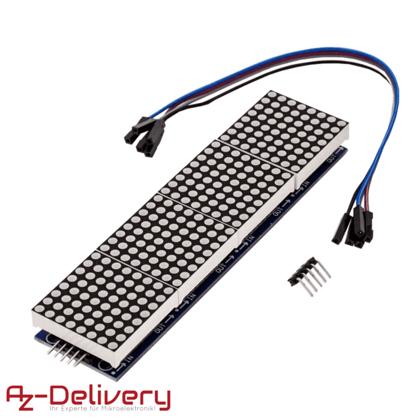
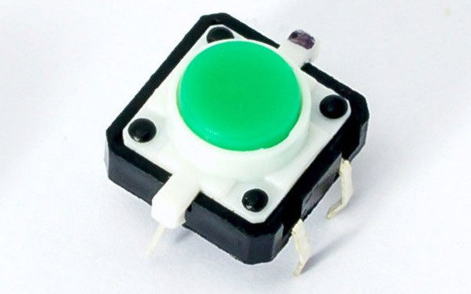
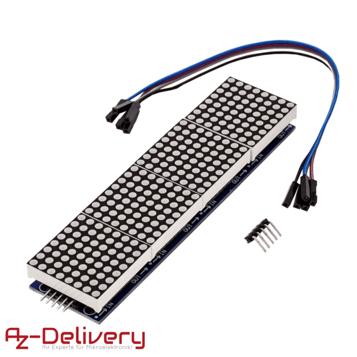
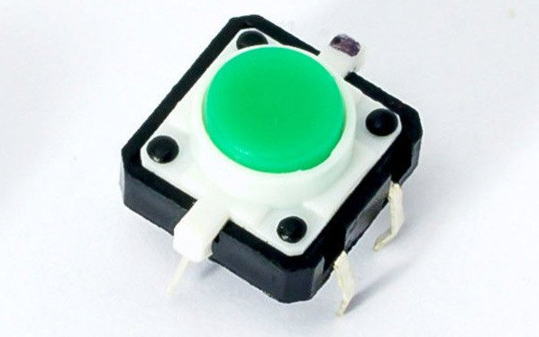

Vorbereiten der SD-Karte
Anders als bei kleineren Microcontrollern laufen die Anwendungsprogramme auf dem Raspberry Pi nur in
seltenen Ausnahmefällen ohne Betriebssystem direkt auf der Hardware. Stattdessen kommt meistens eine
angepasste Linux-Distribution zum Einsatz. Häufig handelt es sich dabei um das von der Raspberry Pi
Foundation herausgegebene Raspbian, das im
Grunde genommen ein angepasstes Debian ist. Von
diesem gibt es wiederum drei Varianten, die sich in der Anzahl der vorinstallierten Programme unterscheiden.
Rasbpian Lite ist dabei für Projekte wie dieses besonders geeignet, da es kaum mehr als das Basissystem
und keine unnötigten Anwendungsprogramme beinhaltet.
Der erste Schritt besteht deshalb daraus, Raspbian Liste von der
offiziellen Downloadseite
herunterzuladen und auf eine Mini SD-Karte zu schreiben. Von dieser muss der Pi dann gestartet werden.
Eine andere Möglichkeit wäre, mit einem Werkzeug wie Buildroot
ein komplett eigenes Linux-Image zusammenzustellen. Dies ist insbesondere für die professionelle
IoT- und Embedded-Produktentwicklung relevant. Auf der Seite
wpvs.de haben wir ein ausführliches
Skript dazu, in der Vorlesung werden wir das allerdings erst einmal nicht vertiefen.
Erste Anmeldung und Basiskonfiguration
Die erste Anmeldung am Raspberry Pi muss direkt am Gerät mit angeschlossener Tastatur und Bildschirm
erfolgen. Denn anfangs ist weder ein SSH-Server installiert, noch wurde die Netzwerkverbindung konfiguriert.
Nach dem Hochfahren melden wir uns daher mit folgenden Zugangsdaten an:
-
Benutzername: pi
-
Passwort: raspberry
Achtung! Bei der ersten Anmeldung ist noch ein englisches Tastaturlayout voreingestellt.
Die Tasten Z und Y sind daher (neben vielen anderen) vertauscht.
Die Basiseinrichtung des Betriebssystems erfolgt mit dem Programm raspi-config,
das mit folgendem Befehl aufgerufen werden kann (ohne das Dollarzeichen am Anfang):
~ $
sudo raspi-config
Hier müssen folgende Einstellungen geändert werden:
| Menüoption |
Eingaben bzw. Auswahl |
|
Localisation Options → Change Locale
|
In der ersten Liste zusätzlich die beiden Einträge
„de_DE ISO-8859-1” und „de_DE UTF-8”
auswählen. In der zweiten Liste dann „de_DE”
als Standardsprache auswählen. Danach ca. eine Minute
warten, bis die Generierung abgeschlossen ist.
|
|
Localisation Options → Change Timezone
|
In der ersten Liste „Europe“, in der zweiten
„Berlin“ auswählen.
|
|
Localisation Options → Change Wi-Fi Country
|
Hier „DE Germany” auswählen.
|
|
Interfacing Options → SPI
|
Die Frage, ob das SPI-Interface aktiviert werden soll, bejahen.
|
Die Konfiguration des Tastaturlayouts funktioniert aktuell (Stand: August 2019) leider
nicht richtig. Die Änderung kann aber mit einem einfachen Texteditor manuell vorgenommen
werden:
~ $
sudo nano /etc/default/keyboard
In der Datei müssen folgende Einträge vorhanden sein bzw. angepasst werden:
XKBMODEL="pc105"
XKBLAYOUT="de"
XKBVARIANT=""
XKBOPTIONS=""
BACKSPACE="guess"
Mit Strg+O können die Änderungen gesichert werden. Mit Strg+X wird
der Editor beendet. Danach sollte der Pi einmal mit folgendem Befehl neugestartet werden:
~ $
reboot
WLAN konfigurieren
Falls der Pi über ein Netzwerkkabel im Internet hängt, ist alles in Ordnung. Das Netzwerk
sollte sich beim Hochfahren automatisch konfigurieren und kann mit folgenden Befehlen
getestet werden:
~ $
ip addr show
~ $
ping web.de
Das WLAN kann sich hingegen nicht selbst konfigurieren, da der Pi erst wissen muss, mit welchem
Netz er sich verbinden muss und welches Kennwert er dafür benötigt. Diese Informationen können
in der Datei /etc/wpa_supplicant/wpa_supplication.conf wie folgt hinterlegt werden:
~ $
sudo nano /etc/wpa_supplication/wpa_supplicant.conf
Im einfachsten Fall müssen hier nur folgende Zeilen hinzugefügt werden:
network={
ssid="Name des WLAN-Netzwerks"
psk="Kennwort"
}
Danach die Datei wieder mit Strg+O sichern und den Editor mit Strg+X verlassen.
Mit folgenden Befehlen kann die WLAN-Verbindung getrennt (falls durch einen früheren Versuch bereits
verbunden) und danach erneut aufgebaut werden:
~ $
sudo ifconfig wlan0 down
~ $
sudo ifconfig wlan0 up
Nach einer Weile sollte folgender Befehl mindestens eine gültige IP-Adresse anzeigen. Da der
Verbindungsaufbau aber eine Weile gehen kann, muss der Befehl ggf. mehrfach ausgeführt werden,
bevor man etwas sieht.
~ $
ip addr show wlan0
Fernzugriff via SSH erlauben
Eine beliebte Möglichkeit, entfernte Rechner, die entweder weit weg sind oder keinen Bildschirm
und keine Tastatur besitzen, zu bedienen bietet SSH, was für „Secure Shell“ steht. Ganz leicht
lässt sich damit eine verschlüsselte Konsolenverbindung (ohne grafische Oberfläche) zu einem
anderen Computer herstellen. Seit vielen Jahren gehört dieses Programm deshalb zum Werkzeugkoffer
eines jeden Linux-Administrators. Unter Raspbian kann es mit folgenden Befehlen installiert und
automatisch gestartet werden:
~ $
sudo apt install openssh-server
~ $
sudo systemctl enable sshd
~ $
sudo systemctl start sshd
Von nun an kann jeder SSH-Client (i.d.R. entweder OpenSSH oder Getty) verwendet werden, um auf
den Raspberry Pi zuzugreifen. Tastatur und Maus werden dann nicht mehr benötigt.
 


